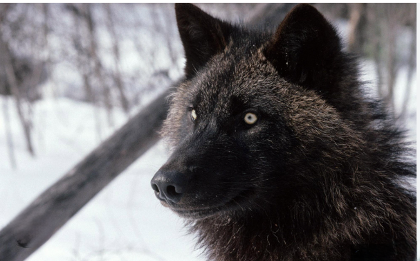
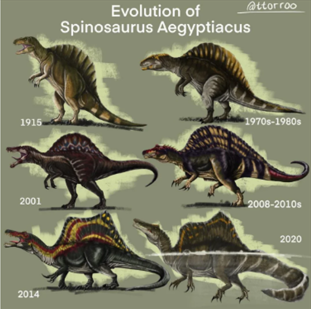
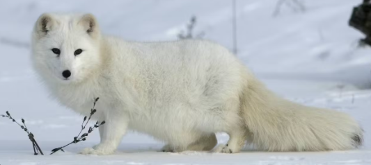
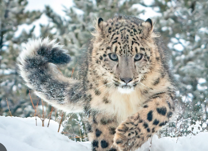

Wolves
information: Wolves are large carnivores native to eurasia and north america. they live in packs of 6-10 but most common a pack is 7 wolves, wolves mainly hunt hoofed animals like deer,elk and so on wolves give birth to around 1-10 pups but most common are 4-7, they also only give birth to one litter of pups in their life time and then the pups stay with the pack untill ther about 10-54 months old. A normal pack is made up of two adult and juveniles and yearlings, their have been packs made of two to four family group
Cats
information: In the beginning cats started of as house/farm pets back in ancient egypt, they even got statues made of them and carvings made of them, Cats have a basic instinct to hunt small animals like vermine and with ther agility they are perfect hunter, to keep houses and farms clean from pest animals like rats,molles,mice, for normal animals cats will eat anything they can catch. Cats became so popular that we have 100 or so diffrent breeds of cats in the world.

Spinosaurus
information: Spinosaurus was one of the wierdest mysterys in archaeology since the first ever skeleton was destroyed in world war 2. We still dont know if there exists a full skeleton of the animal since most of them can be mixed up with other of the same species, in the last years spino has lost alot of its size as new theorys come out at the moment its basicly a crocodillian just with a big sail on its back a 14 meters long body and about 7.4 metric tons of waight, spino was a semiaquatic creature, Its main diet was fish. Scientists think it also would go for any terrestrial dino or creatures it could catch.
Arctic foxes
information: Arctic foxes or snow fox or polar fox they have alot of names, they are well adapted for living in the cold with its thick warm fur that also works as camoflage in the snow, their around 46-68 cm long and can live up to 11 years but most dont last more then 1 year, their main diet is small animals like seal pups, waterbirds, lemmings and voles.
Snow leopards
information: Snow leopards are large cats in the family panthers, they live in central and south asia in high mountain alpine and subalpine areas at 3 000-4 000m in elevation, snow leopards are a sister group to tigers split about 2.7-3.7 milion years ago, during that time that group evolved to live and hunt in the mountains, with their white fur and grey spots on the head that turn into black rossettes along the body ending in a bushy tail for balance. snow leopards have small ears so they dont lose heat and with their big pawns they distribute their weight over a bigger area, they are mostly active at dawn to early morning then again in the afternoon to early evenings,
